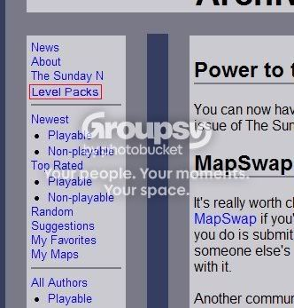

#12724 1 2006-12-09T10:23:39Z sweep Earlier today, Arachnid essentially gave me & maestro access to the NUMA server, with the intent of allowing us to take the reigns of NUMA, allowing us to move forward into a new age of sorts.
Thanks to Pembie for making this all possible. He has been incredibly helpful in chasing this up. And, of course, thanks to Arachnid, for having trust in me & maestro and for building NUMA in the first place.
Me & maestro are willing to listen to everything you guys have to say. We're not committing to any particular changes yet, and we're not going to rush into things, but we really want to hear what you guys think. That, of course, is what the NUMA subforum is for.
Here's to a bright future for NUMA.
NUMA Developments Thread#266954 2 2006-12-09T10:41:26Z Element Wow, great. It seems that it might be better if you and maestro have NUMA. Have a great time.
#266958 3 2006-12-09T10:57:06Z Cowgomoo This sounds great, cant wait until you and maestro make some changes.
#266960 4 2006-12-09T11:09:09Z JeCa This sounds great, cant wait until you and maestro make some changes.
Still, I was really happy when you (@Sweep) said that you weren't going to rush into things. Hopefully you'll be able to get everything going more smoothly on NUMA.

#266961 5 2006-12-09T11:18:37Z 29403 Congrats!
Good luck with NUMA
Don't delete ratings please!
#266965 6 2006-12-09T11:37:10Z apg You two were likely the best possible people for NUMA admins. I want to congratulate you guys, and Arachnid for his incredible job with NUMA!
We're not committing to any particular changes yet, and we're not going to rush into things, but we really want to hear what you guys think.
That's the spirit! Do make changes, but don't rush things.

I'd like to see the difficulty ratings and map tags, plus maybe a new layout.
Also, you (Sweep & maestro) should be able to see what everyone has voted and modify/delete votes to prevent sniping. Of course, the "edit" and "quote" -buttons for comments are greatly needed. And how about a "bitesize this map" -button that automatically sends a bitesize account to S&M? Or a list that keeps track of how many times the level has been favorited and by whom? And is it been bitesized/accounted yet? Plus, a list of levels that need ratings (You could sort levels by "Newest", "Top rated" or "Unnoticed".)
Oh man, we could make a thread filled with suggestions for the new NUMA.
#266977 7 2006-12-09T12:01:06Z sweep You two were likely the best possible people for NUMA admins. I want to congratulate you guys, and Arachnid for his incredible job with NUMA!
We're not committing to any particular changes yet, and we're not going to rush into things, but we really want to hear what you guys think.
That's the spirit! Do make changes, but don't rush things.
I'd like to see the difficulty ratings and map tags, plus maybe a new layout.
Also, you (Sweep & maestro) should be able to see what everyone has voted and modify/delete votes to prevent sniping. Of course, the "edit" and "quote" -buttons for comments are greatly needed. And how about a "bitesize this map" -button that automatically sends a bitesize account to S&M? Or a list that keeps track of how many times the level has been favorited and by whom? And is it been bitesized/accounted yet? Plus, a list of levels that need ratings (You could sort levels by "Newest", "Top rated" or "Unnoticed".)
Oh man, we could make a thread filled with suggestions for the new NUMA.
NUMA discussion subforum#266985 8 2006-12-09T12:27:26Z Ad I take it that Arachnid still has more, or as much, control over NUMA as you two now do?
#266986 9 2006-12-09T12:36:03Z Pembie He has more, they refere to him for major things, however essentially they run it.
I'd like to thank Archnid for his extreamly kindness and trust to allow this to happen.
#266994 10 2006-12-09T13:01:39Z apg When will this be added to NUMA's "news" -page?
Edit: Thanks.
")
#266996 11 2006-12-09T13:03:12Z Zres Wow. Thanks Arachnid for giving some of NUMA into more active and responsible (I'm not saying that you're not responsible, Arachnid. I just can't find a better way to phrase that sentence.) hands.
Cheers to the great future that is NUMA!
#267024 12 2006-12-09T14:26:24Z Twistkill Here's to a new age in Numa. I hope to see incredible things implemented in the future.
#267036 13 2006-12-09T14:52:26Z ska Yay, It's finally official!
Well, just make sure you don't get drunk on power or anything...
#267039 14 2006-12-09T15:02:49Z astro I just came online a little while ago. This is great news and I'm looking forward to helping with Numa.
#267042 15 2006-12-09T15:21:19Z Keron Cyst Ooh, sweep. I was thinking of making you admin, but now I guess you'll be way too busy with that

Okay, so make mappers able to submit unvotable, only commentable maps. I'll be waiting
#267043 16 2006-12-09T15:22:59Z traction safe to say:
i'm excited.
#267054 17 2006-12-09T15:52:59Z lord_day Best news all year. Do a good job guys

#267059 18 2006-12-09T16:00:08Z Pheidippides This is awesome, guys.

One question: should we still e-mail Arachnid about problems for the time being? Or should we PM you guys?
#267068 19 2006-12-09T16:09:59Z astro I think the best order of contact is:
a) post it on the forums
b) catch me or Sweep on IRC
c) PM me or Sweep
d) catch Arachnid on IRC
e) email Arachnid
#267071 20 2006-12-09T16:12:41Z Zugbop Well done, this is good. Make some good changes.
#267074 21 2006-12-09T16:20:02Z Caero Man, this is too cool. Can't wait to see some good changes.
Now I'd really like to see a "Levelpack" section.
#267089 22 2006-12-09T16:41:49Z rocket_thumped This is incredible. Way to go.
#267109 23 2006-12-09T17:13:00Z Exüberance YES!! NOW NUMA HAS ACTIVE MODERATORS!!

#267147 24 2006-12-09T18:00:34Z Azmilion This is so freakin rad,Now just don't screw up
#267170 25 2006-12-09T19:26:23Z Spiker This is pretty damn awesome. Best news I've heard in a long time.
Of course you do understand now you will be flooded with hundreds of little things like "BANS THS N00B FOR SWARING!!!1"
#267177 26 2006-12-09T19:38:39Z Chase Finally, some control over NUMA, we can remove all rude and offensive maps with ease!
#267194 27 2006-12-09T20:13:35Z catspride Wow. That is awesome guys. So glad there will be some change around Numa now.
And as soon as I leave

#267198 28 2006-12-09T20:21:47Z mXr wow this is great im hope to see some changes pitty i really dont have any ideas
#267209 29 2006-12-09T20:36:29Z Borealis That's great for you guys. I'd also like to see a level pack area, as Caero suggested. But anyway, don't screw it up!

#267302 30 2006-12-09T23:13:45Z Navick YES! I've been waiting forever for this.
Just a suggestion: a tileset section would be awesome. If you put a tileset into incomplete, it feels out of place to me.
Well, I'm looking forward to some changes.
#267350 31 2006-12-10T01:32:56Z Teedle Okay, so make mappers able to submit unvotable, only commentable maps. I'll be waiting
Now I'd really like to see a "Levelpack" section.
Both quotes = my thoughts exactly.
Though, I'd much prefer a simple 'episode' section over a 'levelpack' one. Submit maps in packs of 5, and 'rate' the episodes. Yeah, that'd be swell.
Glad to see some new life is being breathed (Breathed? That doesn't sound right... Brothed? Brothen? Broth?) into NUMA. Still, while I don't think it's likely you guys will... I have to mention... don't screw it up.
#267361 32 2006-12-10T02:31:31Z Maniac Did you guys read Arachnid's
user page? Funny stuff.
Well, I'm glad the two of you have control over NUMA as well now. Best of wishes.

#267409 33 2006-12-10T05:26:54Z Legacy Yeah, lol. Keep it rollin'. Also, possibly a chance for a displayed voting system? just throwin' that in.
Be the best ninjas you can be.
#267416 34 2006-12-10T05:46:35Z Cerberus Wow. Congrats you two. Can't wait for the near future.
#267446 35 2006-12-10T07:12:34Z krusch Did you guys read Arachnid's user page? Funny stuff.
Heh, I remember when he changed that. It was when Nemetecyst was abusing anyone who said they didn't like his maps. After one particularly vulgar post, 'nid decided that enough was enough, and changed all of his cusses to "banana", posted, so it was clear that an administrator was around, and changed his profile to that.
This is a good development for NUMA and us, I'm pretty sure. Sweep and maestro will have fun with all the freedom. Remember, Arachnid was not a poor administrator. He was just far too busy with work and his outside life, as far as I gathered.
Big thanks to Arachnid for all he's done, and also for continuing to host the site.
Good luck to Sweep and maestro!
#267470 36 2006-12-10T09:27:42Z astro This is awesome, guys. One question: should we still e-mail Arachnid about problems for the time being? Or should we PM you guys?
I've been talking to Arachnid, and he has said that he'll set up a numa (@) notdot.com address. So, for important stuff, that's probably your best bet after looking on IRC, because that will let all three of us know about it.
#267482 37 2006-12-10T09:57:34Z George This is great news! I'm looking forward to a new era of NUMA.
#267498 38 2006-12-10T10:46:51Z Mr_Mongoose YAY
That is all.
#267554 39 2006-12-10T13:08:24Z silent_night Any way you could make it say what rank the user is in his/her user information?
#267581 40 2006-12-10T13:37:52Z mXr you should put tileset on bitesize numa aswell
#267606 41 2006-12-10T14:15:12Z sweep you should put tileset on bitesize numa aswell
That's a point.
But something tells me bitesizeNUMA isn't going to be around as a separate site for much longer, so it probably isn't worth the time
#267617 42 2006-12-10T14:28:39Z ZZ9 Perhaps a bitesize category?
#267618 43 2006-12-10T14:31:46Z Shark This truly is a new age for NUMA. I'll be waiting for the changes.
#267619 44 2006-12-10T14:32:33Z Navick I really like the improvements that you've made to NUMA, S&M. I'm looking forward to some more great ideas.

#267694 45 2006-12-10T17:50:40Z smartalco Though, I'd much prefer a simple 'episode' section over a 'levelpack' one. Submit maps in packs of 5, and 'rate' the episodes. Yeah, that'd be swell.
i would wait until 1.5 to add anything as far as episodes or levelpacks go, because in 1.5 there might be new features dealing with such things with different syntax's, at which point you would have to change it anyway... just a thought
anyway, congrats to sweep and maestro
#267762 46 2006-12-10T20:17:15Z kamikaze3000 YES! I've been waiting forever for this.
Just a suggestion: a tileset section would be awesome. If you put a tileset into incomplete, it feels out of place to me.
Well, I'm looking forward to some changes.
about time that it's been done. thanks sweep and/or maestro *
*delete as appropriate
*cough* - about time
#267765 47 2006-12-10T20:20:38Z McP3000 "Heil Maesto and Sweep"
Thanks you two (probably more sweep) for making Numa so much better and implementing some of our suggestions that we have tirelessly suggested in that Damn discussion forum.
That is all.
#267844 48 2006-12-10T22:45:04Z catspride Sweet. I just noticed that the voting now has a description, kind of.
But it's a lot better. Now I hope I won't overrate as much.
#267884 49 2006-12-11T00:05:49Z Topolord YES!!!!!!
this is so cool!!!
yay... I'm am so pumped.
#267887 50 2006-12-11T00:08:47Z catspride To speak of it, I am pumped as well.
I know I'm not on Numa anymore, but I'm so happy you guys are in control now.
I know that there will be tons of improvements. It just makes me so happy. [/funny inside]
Keep up the good work.
#268059 51 2006-12-11T07:53:09Z Atilla Huzzah.
Also, I assume you've looked through the
undecided NUMA suggestions thread. It is pinned, after all.
#268189 52 2006-12-11T17:05:27Z Britannia YAY
That is all.
Ditto. I'm sceptical until I see something
#268192 53 2006-12-11T17:08:01Z Limer OMG! this is amazing! i can't believe that the one time i take a break, something like this happens! congrats for you guys. good luck
#268327 54 2006-12-11T21:10:41Z catspride Yes Limer, we are in a new era. Numa will be changed forever, and for many good reasons. Sweep and Maestro will do an exceptional job.
I'm just happy that we now have active mods on Numa. I know Arachnid did his job, but he was a busy man. He done lots for Numa.
Great addition with the new category as well.
#268677 55 2006-12-12T06:19:25Z Winjet man, you guys are lucky... sorta. Why'd he pick you 2 anyway? Neither one of you seem to go on NUMA much, especially not maestro. What'd you guys have to do? or did he just give the position to you?
#268706 56 2006-12-12T06:54:01Z McP3000 Sweep knows all that HTML stuff and already runs a website. Maestro also has his own website called Maestrosync. Im surprised they didnt pick someone more active at numa than maestro though. Ive never seen one of his maps.
#268723 57 2006-12-12T07:41:10Z Winjet Im surprised they didnt pick someone more active at numa than maestro though. Ive never seen one of his maps.
same. I've only seen "Shine" which I think most people have.
#268802 58 2006-12-12T13:33:52Z astro ;(
I've got
sixty maps! A few of them are quite good.
We didn't have to go through any tests or anything. Apparently Arachnid just mentioned on IRC that he trusts the two of us enough to give us access to NumaSweep was a shoe-in, since he had already worked with Arachnid for bitesizeNUMA. As for me, I guess enough word had gotten around.
#268836 59 2006-12-12T16:03:36Z mXr i have an idea
you should be able to have avatars and sigs for numa when you leave comments on maps that would be cool, just an idea
#268858 60 2006-12-12T16:34:15Z lord_day #268872 61 2006-12-12T17:19:27Z spect Im surprised they didnt pick someone more active at numa than maestro though. Ive never seen one of his maps.
Arachnid had the most maps, after all.
HTML really isn't the most important stuff in there, too. It's PHP and some Database stuff.
#268910 62 2006-12-12T19:12:27Z LittleViking #268915 63 2006-12-12T19:27:12Z mXr or that?
and i reckon when you go on my maps it should tell you how many maps you have in each catergory like this:
Action-10 N Arts-2 DDAs-0 Puzzle-3 Incomplete-5 Tileset-11 Race-29 Uncategorized-0 Survival-6 Testlevel-1
oh yeah i think it would be good if it tells people if your online or not
#269231 64 2006-12-13T03:41:23Z Winjet i have an idea you should be able to have avatars and sigs for numa when you leave comments on maps that would be cool, just an idea
not needed. 
Doesn't mean it would be a bad idea though. I'd say no to sigs entirely, but having a small avatar might be nice.
a sig is
definitely unneeded, but I guess a small avatar would be nice. I still think I'd prefer what we already have.
and i reckon when you go on my maps it should tell you how many maps you have in each catergory like this:
Action-10 N Arts-2 DDAs-0 Puzzle-3 Incomplete-5 Tileset-11 Race-29 Uncategorized-0 Survival-6 Testlevel-1
I like that idea
oh yeah i think it would be good if it tells people if your online or not
that's been suggested, and I like it.
#269303 65 2006-12-13T06:58:37Z tktktk Excellent. I'm glad to see some real changes taking place to make Numa a better place.
#269306 66 2006-12-13T07:22:21Z Pembie We didn't have to go through any tests or anything. Apparently Arachnid just mentioned on IRC that he trusts the two of us enough to give us access to NumaSweep was a shoe-in, since he had already worked with Arachnid for bitesizeNUMA. As for me, I guess enough word had gotten around.
...
I (unlike the rest of you) decided to take the initiative to go and ask Arachnid if he would be willing to give adminship to other uses as he didn't have much time. That was about a month ago or more, so from then on I've been trying to chase you and Sweep up to contact him as you to were the people that I suggested to do it. Really, if I hadn't have done that, people would still be complaining at great lengths that nobody does anything.
I'm really annoyed at the fact that nobody has even metioned what
I did for this to happen, except Sweep who put it in the topic.

#269324 67 2006-12-13T08:11:19Z Kablizzy This has been on the board for half a year or more. Please, try not to take all the credit for something that may not have been entirely yours to take, hm?
#269331 68 2006-12-13T08:22:52Z astro Sweep mentioned it all, and said that you have been incredibly helpful. I for one didn't actually know that you went and took the initiative to ask Arachnid about that in particular, or that you suggested us in particular. And it is so great that you did.
#269351 69 2006-12-13T09:06:57Z Winjet I'm really annoyed at the fact that nobody has even metioned what I did for this to happen, except Sweep who put it in the topic.
If he put it in the topic starter, then everyone read it. Calm down. But I guess we should thank you.
#269355 70 2006-12-13T09:18:39Z sweep Sweep mentioned it all, and said that you have been incredibly helpful. I for one didn't actually know that you went and took the initiative to ask Arachnid about that in particular, or that you suggested us in particular. And it is so great that you did.
for some reason, you don't sound so greatful...
Is a comment like this really needed? He clearly is grateful. He'd be stupid not to be.
#269356 71 2006-12-13T09:23:35Z astro Oh, for some reason, eh? That's great. Thankyou for the sarcasm. I'm glad you don't think I'm greatful for Pembie taking the effort to help Numa and give me the great oppurtunity to be a part of improving it. Obviously I'm a conceited bastard who doesn't 'guess we should thank [him] a little'. Unlike you. You didn't just belittle Pembie, and you didn't call our efforts to make NUMA less breakable a 'stupid piece of s***'. Thanks for all your great input.
#269358 72 2006-12-13T09:31:56Z Pembie I for one didn't actually know that you went and took the initiative to ask Arachnid about that in particular, or that you suggested us in particular. And it is so great that you did.
That's what I was trying to put accross in my post, nit take all the credit, ok Kablizzy?
Edit:
This has been on the board for half a year or more.
If so, why am I the first one to do something about it? And why am I taking all the credit for explaining what I did? Really, Sweep, maestro, Arachnid and KinGAleX have been the only one's to thank me for actually getting the show on the road.
#269407 73 2006-12-13T13:30:39Z mXr i think the changes are great
#269451 74 2006-12-13T17:44:54Z Sendy This is a fantastic development. I look forwards to your improvements with antici....
#269526 75 2006-12-13T20:59:18Z Winjet This has been on the board for half a year or more.
If so, why am I the first one to do something about it? And why am I taking all the credit for explaining what I did? Really, Sweep, maestro, Arachnid and KinGAleX have been the only one's to thank me for actually getting the show on the road.
Thank you. Even though I don't know everything you did. But the new things really are great.
#269569 76 2006-12-13T22:21:26Z mXr ive ran out of ideas

#269870 77 2006-12-14T05:09:24Z Kablizzy I for one didn't actually know that you went and took the initiative to ask Arachnid about that in particular, or that you suggested us in particular. And it is so great that you did.
That's what I was trying to put accross in my post, nit take all the credit, ok Kablizzy?
Edit:
This has been on the board for half a year or more.
If so, why am I the first one to do something about it? And why am I taking all the credit for explaining what I did? Really, Sweep, maestro, Arachnid and KinGAleX have been the only one's to thank me for actually getting the show on the road.
My entire point was that you're not the only one to have suggested this, and that's why I posted. A lot of people have spoken to Arachnid over it over the past six or seven months. Arachnid was well aware that mods were wanted, needed, and fully supported, and it's been a topic of some popular discussion around here. Your post seemed like you were annoyed that no one gave you credit for everything that you did. I gleaned that information from the word "annoyed" the phrase "unlike the rest of you," the six instances of the word "I," (including one bolded instance), and the idea that you seem to think that you're the only one to have done this. So, from that information, it seemed like you'd ignored everyone who had suggested this before you, and wanted all of the credit for yourself.
Anyway, my point being, how were we supposed to know that it was you that suggested it? If only you and Arachnid knew that you were the one to suggest this, then this is the first we've heard of it. Would it be possible that Sweep, maestro, Arachnid, and KA were the only ones to know about it? Because I sure didn't. From there, doesn't it logically follow that none of us knew that you suggested it, how could we have given you credit for it?
Now, that's not to say that I'm not grateful, because I'm glad that you said something, and I don't know what you said to make Arachnid change his mind, because it must've been something persuasive, so thank you for that.
#269905 78 2006-12-14T06:10:17Z Pembie Look, soory if my post seemed ahressive. I was in a bit of a bad mood, but at least now people know what I did to be thanked in the first post.
#269910 79 2006-12-14T06:13:37Z Kablizzy No worries, man. I just didn't want a misunderstanding between us. I'm sorry if I seemed to be jumping down your throat. I'm glad you did what you did.

#270137 80 2006-12-14T21:52:03Z Arachnid My entire point was that you're not the only one to have suggested this, and that's why I posted. A lot of people have spoken to Arachnid over it over the past six or seven months. Arachnid was well aware that mods were wanted, needed, and fully supported, and it's been a topic of some popular discussion around here.
Pembie was the only one to have actually done anything about it. Sitting and complaining is easy - anyone can do it. Pembie was the only one to actually pull finger and do something about it instead of just sitting there whining. The idea of having others take over day-to-day maintenance of NUMA is not a particularly original one, and I don't think those who simply sat around and said 'someone should...' really deserve any significant recognition for doing that. The person that actually did something about it is another matter altogether.
#270190 81 2006-12-14T23:07:54Z blue_tetris I agree. Here here! And it helps that everyone involved was so absolutely approachable about the matter.
*rubs the back of his head uncomfortably*
Right? All parties involved? Amirite amirite?
#270283 82 2006-12-15T00:57:26Z PNI good luck and congradulations sweep and maestro!
#270447 83 2006-12-15T05:29:15Z Kablizzy My entire point was that you're not the only one to have suggested this, and that's why I posted. A lot of people have spoken to Arachnid over it over the past six or seven months. Arachnid was well aware that mods were wanted, needed, and fully supported, and it's been a topic of some popular discussion around here.
Pembie was the only one to have actually done anything about it. Sitting and complaining is easy - anyone can do it. Pembie was the only one to actually pull finger and do something about it instead of just sitting there whining. The idea of having others take over day-to-day maintenance of NUMA is not a particularly original one, and I don't think those who simply sat around and said 'someone should...' really deserve any significant recognition for doing that. The person that actually did something about it is another matter altogether.
Oh, absolutely, but beyond that, not a lot of us knew that Pembie was the one to do so, if anyone. Can't give him credit if we didn't know about it.
#270544 84 2006-12-15T09:51:30Z Pembie Yeah, what Kablizzy added. I just sorta jumped at the mark a bit.
#271000 85 2006-12-16T02:19:25Z ska (';(')
#271009 86 2006-12-16T02:46:16Z astro Popeye?
#271119 87 2006-12-16T05:33:09Z Winjet (';(')
Popeye?
How's that popeye?
#271130 88 2006-12-16T05:45:32Z astro It totally is!
Attachment (lost): post-1-1166247932.png
#271141 89 2006-12-16T05:57:56Z dejablue It totally is!
Heh

.
And sort of off topic, but maestro, have you heard anything from sweep about that thing that was brought up a couple days ago?
#271895 90 2006-12-17T05:37:33Z Winjet It totally is!
Heh .
...oooookay...
And sort of off topic, but maestro, have you heard anything from sweep about that thing that was brought up a couple days ago?
what thing?
#271904 91 2006-12-17T05:41:37Z astro Ha. What think do you think it was? What thing involving dejablue would we have been discussing?
#271913 92 2006-12-17T05:47:54Z dejablue Ha. What think do you think it was? What thing involving dejablue would we have been discussing?
Oh, I don't know. Could it possibly have something to do with the 10 bajillion threads that were made today on multi-accounting confessions? Nahh.
#288869 93 2007-01-22T21:54:20Z mXr Maybe level packs?
Ignore the red line...

#288875 94 2007-01-22T22:00:12Z Maniac And then you could download the userlevels.txt files and swap them with your current one. I like
#288878 95 2007-01-22T22:01:01Z mXr Yes,yes and that.
#290277 96 2007-01-26T19:34:42Z Topolord Might I say that the new bitesize function is amazering. I've been looking forward to this for ages. YAY!
#290328 97 2007-01-26T21:56:00Z Limer ^yes, it is very good. but i was hoping there would be some sort of search function
#290935 98 2007-01-28T15:34:21Z Spiker Well couldn't they just put a little ticker box when you're searching that says 'Bitesized'?
And to level packs, I had thought about it, and couldn't you just submit a blank map with a link attached to the pack? Whether it be on the forums, or at pastebin or something.
#291167 99 2007-01-28T23:27:02Z Exüberance just add "&bitesized=true" to the end of the url
Teh NUMA map search URL parameter... uh... thing...
Format: &<parameter>=<argument>
Parameter: author
Valid arguments: String: any author name
Parameter: bitesized
Valid arguments: Boolean (true/false)
Parameter: rated this means that the map has at least 5 votes
Valid arguments: Boolean (true/false)
Parameter: sort
Valid arguments: String: "random" "rating" "votes" "created" don't actually type in the quotes
Parameter: order
Valid arguments: String: "desc" "asc"
Parameter: category
Valid arguments: Integer: 1,2,3,4,5,6,7,8,9
1=action
2=puzzle
3=test level
4=race
5=survival
6=incomplete
7=DDA
8=N art
9=tileset
Parameter: name the name must contain the entered string (text) in it
Valid Arguments: String: anything
Parameter: count the number of maps per page
Valid Arguments: Integer: any positive integer
#297225 100 2007-02-14T15:00:55Z faemir well, it's been great before now, and with you two hopefully it will get even better